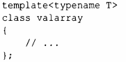
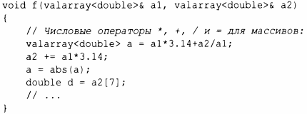

⇐14.5 Случайные числа 14.7 Границы числовых значений⇒
vector, описанный в § 11.2, был разработан в качестве общего механизма для хранения значений, который был бы гибким и вписывался в архитектуру контейнеров, итераторов и алгоритмов. Однако он не поддерживает математические векторные операции. Добавление таких операций к vector было бы простым, но его универсальность и гибкость исключают возможности оптимизации, которые часто считаются необходимыми для серьезных численных методов. Поэтому стандартная библиотека предоставляет (в заголовочном файле <valarray>) векторный шаблон valarray, который является менее общим и более поддающимся оптимизации для численных вычислений:
Для valarray поддерживаются обычные арифметические операции и наиболее распространенные математические функции. Например:
В дополнение к арифметическим операциям valarray предлагает быстрый доступ, облегчающий реализацию многомерных вычислений.